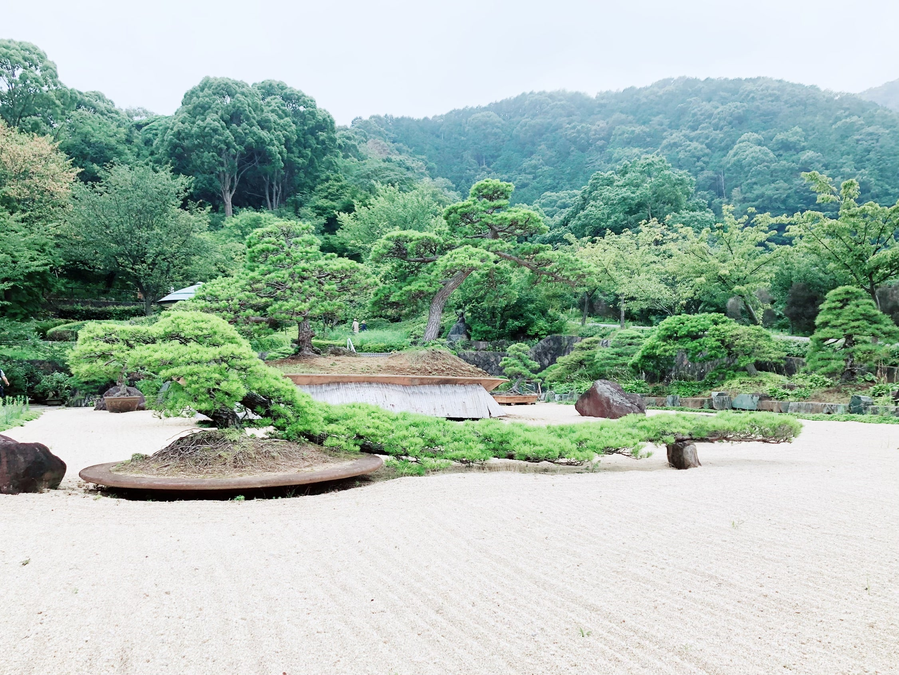
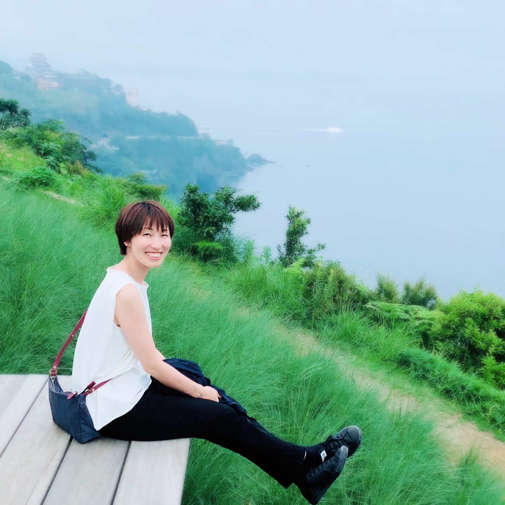
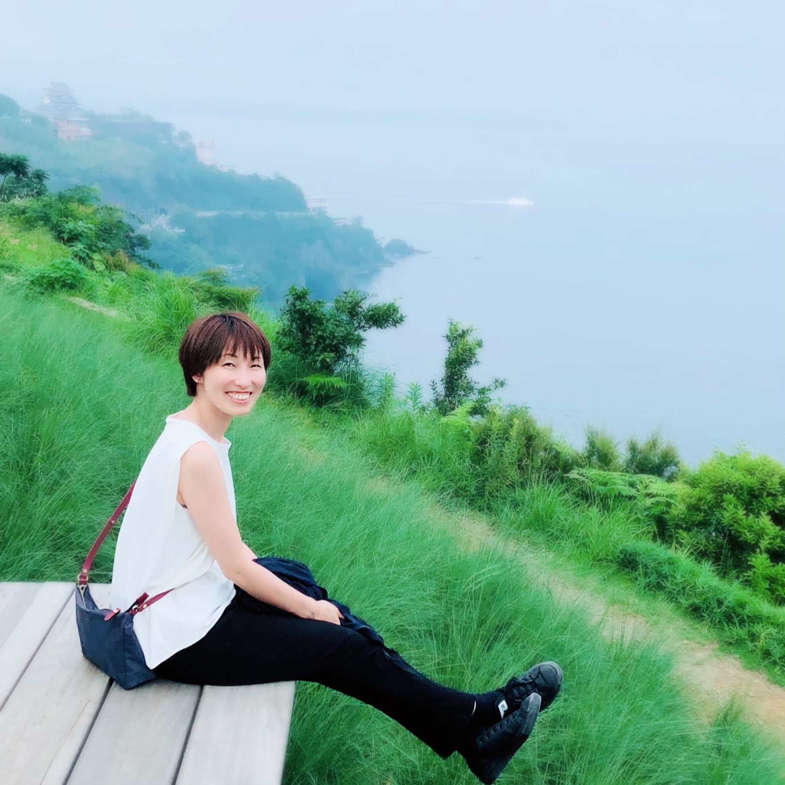
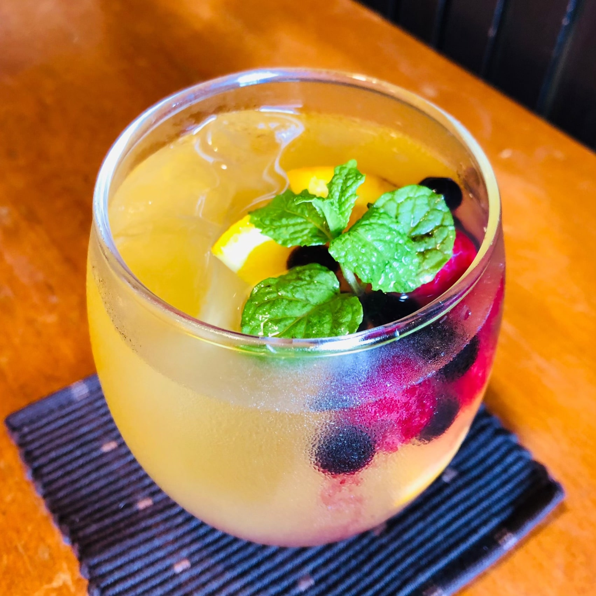
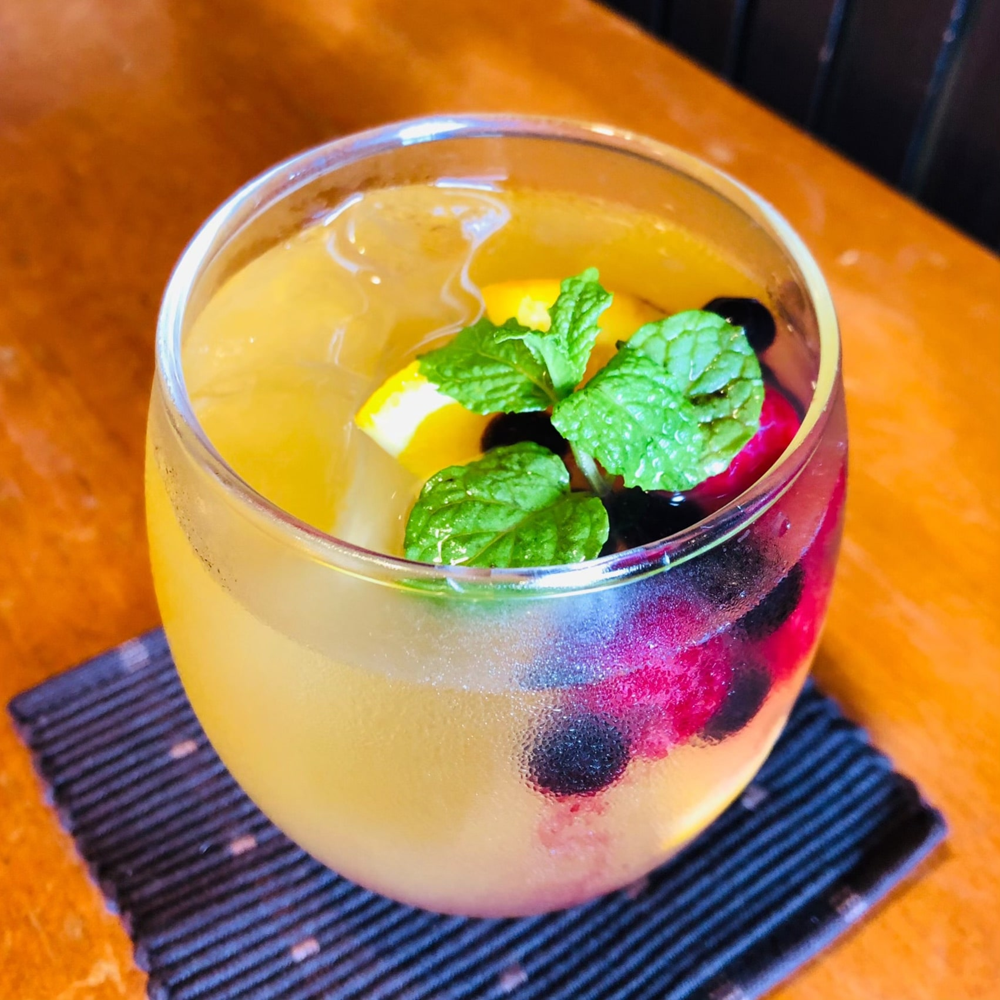

08:15 東京駅

Let's go 静岡！しゅっぱーつ！！
09:50 熱海駅

熱海とうちゃくっ！！１時間半で来れるなんで近いよ！
駅前商店街でお饅頭いただきました～美味しい(´～｀)ﾓｸﾞﾓｸﾞ。
10:20 フルーツキング

なんと恵み深い食べ物。ぴちぴちフルーツが丸ごと～！やんちゃんはピーチ♪ななみはマンゴーと決めてきたがお腹が…残念ながら今回はパス( ﾉД`)ｼｸｼｸ…
10:30 熱海サンビーチ

熱海だ！ビーチだ！お砂遊びしてる～水遊びできる用意してくればよかったね。
11:05 熱海銀座おさかな食堂

行くときに整理券をもらっておいてよかった。42組も待ってる～。ちょうど席に通されるときマグロの解体ショーが！おさかなおさかなっ
13:00 アカオ ハーブ＆ローズガーデン

松だーー！松の盆栽、かっこいい～！！！

この松の姿もかっこいい～！！


 



壮大な真っ青な海！！のはずだったけど、心の中で見ました♪
でも、私たちが外を歩く間は見事に雨が止み、明るく陽が刺し、雲の柱と絶妙な演出でした。感謝！！！
本当に色とりどりのお花が綺麗。写真たくさん撮ったよ～！創造主かみさま、ハレルヤ♪
本当に色とりどりのお花が綺麗。写真たくさん撮ったよ～！創造主かみさま、ハレルヤ♪
15:30 「花の妖精」伊豆ー絶景カフェ


ん～絶景絶景！こちらも心の中で見ましたよ～♪♪また来ますからね！
パフェを目の前にしたやんちゃんのい～感じの写真が取れて大満足のななみ。モデルも カメラマンも の傑作品です！
パフェを目の前にしたやんちゃんのい～感じの写真が取れて大満足のななみ。モデルも カメラマンも の傑作品です！
18:00 大仙屋

じゃーん！今回の旅の本命到着！！青年の家ではないです笑。豪遊です！
最寄り駅が函南(かんなみ)というところなのですが、実はここ、ちょうどSuicaやPASMOが使えなくなるピンポイントの駅だということが分かりました！
最寄り駅が函南(かんなみ)というところなのですが、実はここ、ちょうどSuicaやPASMOが使えなくなるピンポイントの駅だということが分かりました！
ホテルも綺麗！温泉も貸し切り状態！ご飯美味しい！周りはのどか！あぁ心が落ち着く♪
あまりにも美味しかったから、メニューを綴ります。牛すきトマト煮鍋、刺身盛り合わせ、冷やしとろろ、合鴨ロース、いくらオクラ和え、 炙りサーモンのカルパッチョ、赤だし汁、ロブスターグリル、水饅頭（ゆず、メロン）♪♪
あまりにも美味しかったから、メニューを綴ります。牛すきトマト煮鍋、刺身盛り合わせ、冷やしとろろ、合鴨ロース、いくらオクラ和え、 炙りサーモンのカルパッチョ、赤だし汁、ロブスターグリル、水饅頭（ゆず、メロン）♪♪


 
